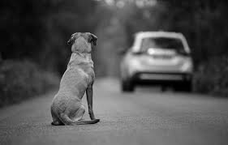
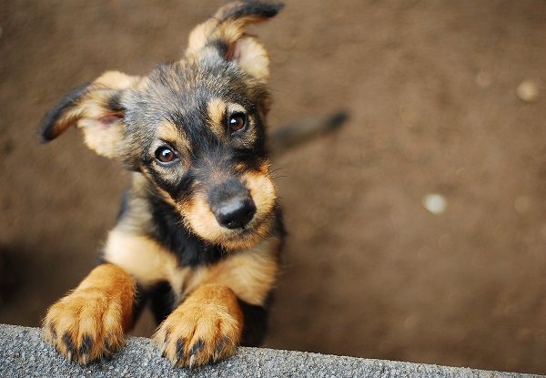

Fundaciones a las que puedes ayudar

Sociedad Protectora de Animales.
Esta organización Trabaja en la prevención del abandono y maltrato de los animales, y promueven la adopción responsable de mascotas.
Leer más
Fundación Rescate Animal.
Esta organización Trabajan en la rehabilitación de los animales rescatados para que puedan encontrar un hogar amoroso y responsable..
Leer más

Fundación Adopta.
Esta organización se dedica a rescatar, cuidar y encontrar hogares responsables para animales de compañía en situaciones de abandono o maltrato.
Leer más